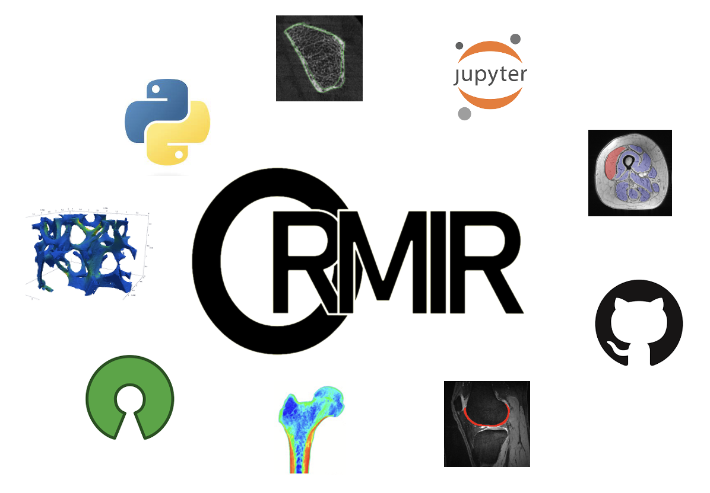

ORMIR¶
The community for Open and Reproducible Musculoskeletal Imaging Research
Our Goals
- Create open, reproducible, well-tested, and well-documented software to analyze musculoskeletal (MSK) images
- Standardize data acquisition and storage to favor data sharing, algorithm comparison, and federated learning
- Promote a culture of openness and reproducibility in MSK imaging research for a faster advancement of the field
¶
Our values
We embrace the Project Jupyter Code of Conduct. The main principles are:- Be inclusive, friendly, and patient
- Be welcoming, considerate, and respectful
- Be careful in the words you choose. Be kind.
- Moderate your expectations. We are all busy. Different people contribute differently.
- When we disagree, try to understand why. A simple apology can go a long way.
I want to...
Join ORMIR!
Just email any member of the Community Advisory Board, and we will get you started!Use code and data!
Look into our Python packages, Jupyter notebooks, and datasets!If you want to contribute, have a look at our coding guidelines!
Learn Open Science!
Find tutorials, notebooks, and cheat sheets here!News
ORMIR manifesto paper - preprint
- Find the preprint of the manifesto paper of our community here
ORMIR Jupyter Notebook template
- We have created a template to standardize our Jupyter notebooks. Download the template from GitHub
Jupyter Community Workshop 2022
- We held our Jupyter Community Workshop "Building the Jupyter Community in MSK imaging Research" on June 9-11, 2022 in Maastricht (The Netherlands). See our full report here
Calendar
Month
| Sun | Mon | Tue | Wed | Thu | Fri | Sat |
|---|---|---|---|---|---|---|
| a | a | a | a | a | a | a |
| a | a | a | a | a | a | a |
| a | a | a | a | a | a | a |
| a | a | a | a | a | a | a |
| a | a | a | a | a | a | a |